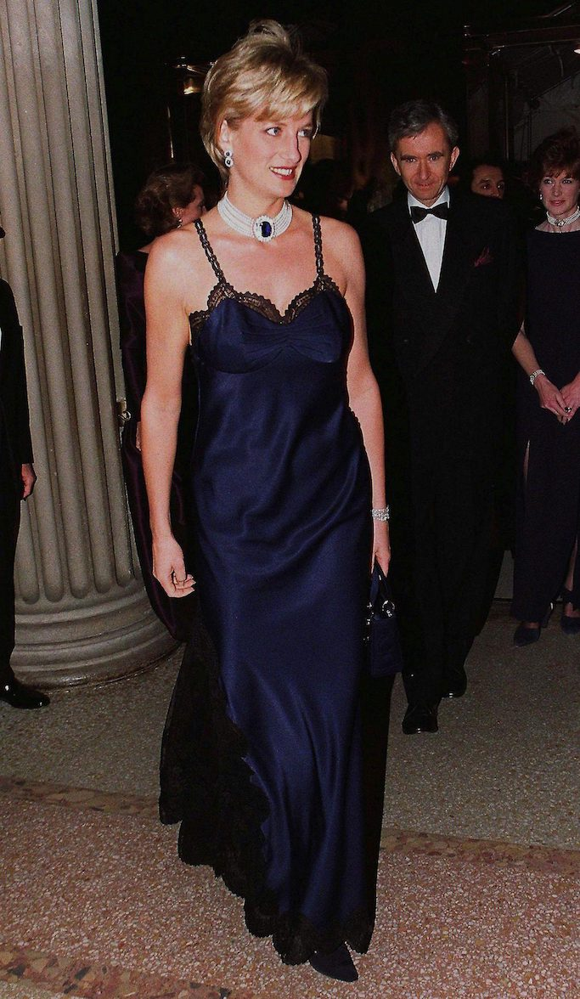

Princess Diana in Christian Dior, 1996
She looked so beautiful.

For the 1996 MET Gala, Lady Di opted to wear a beautiful full length navy blue slip dress, complete with black lace around the edges and bust. She also paired this dress with her iconic pearl and sapphire choker, and it cemented her place in fahion history.
Home